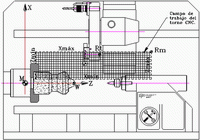

M Punto cero del torno (Origen máquina)
{kind=link}
Punto de referencia invariable de la máquina definida por el fabricante. El punto “M” es el primer origen del sistema de coordenadas. Los sentidos positivos se ven en la figura.
Rm Punto de referencia del torno
Es un punto del área de trabajo de la fresadora definido por el fabricante para realizar la sincronización del sistema de coordenadas del torno. Esto consiste en unos movimientos previos de los carros del torno que son necesarios para que la máquina una vez encendida localice su punto cero máquina (M).
En esta operación llamada “Búsqueda de ceros u orígenes”, los carros se mueven hasta la posición del punto de referencia (Rm), en el cual encuentra unos micros de posición (detector eléctrico de posición accionado mecánicamente), en figura 499 el punto Rt debido al movimiento de carros se sitúa sobre el punto de Referencia del torno (Rm).
La señal producida al pisar el micro es detectada por el control que carga desde parámetros internos del sistema la posición máxima y mínimas del área de trabajo de cada eje y además la posición del cero máquina.
Algunos tornos en vez de micros de posición disponen de reglas absolutas en las que el control lee directamente la posición y sitúa sin moviendo alguno la posición de M.
Rt Punto de referencia de la torreta
Se usa como punto inicial para la medición de las herramientas (geometría o correctores).
El punto “Rt” también lo establece el fabricante del torno. Es el punto que se mueve cuando se programa un movimiento en los ejes X, Z, sino se aplican la geometría de la herramienta (Véase Apartado 2-7).